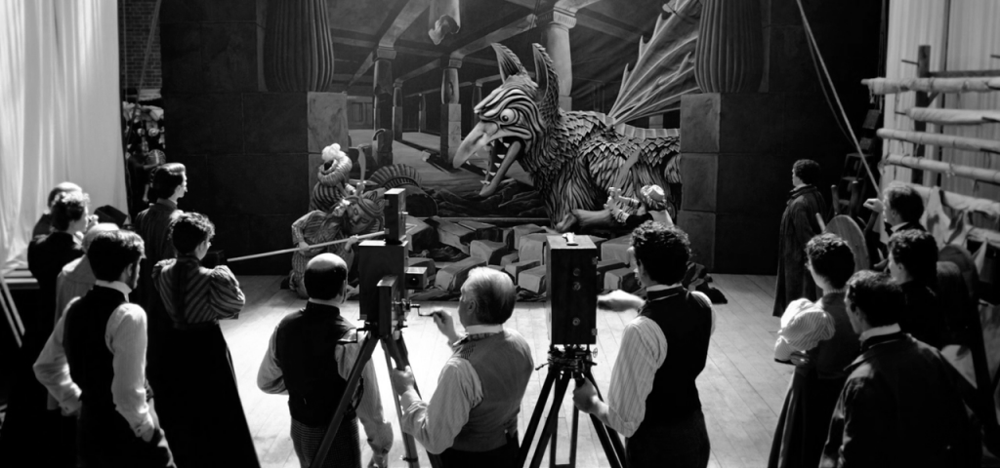
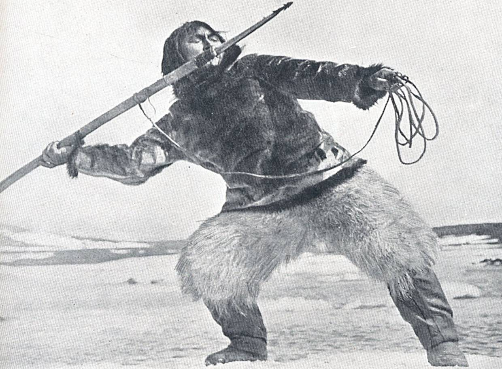
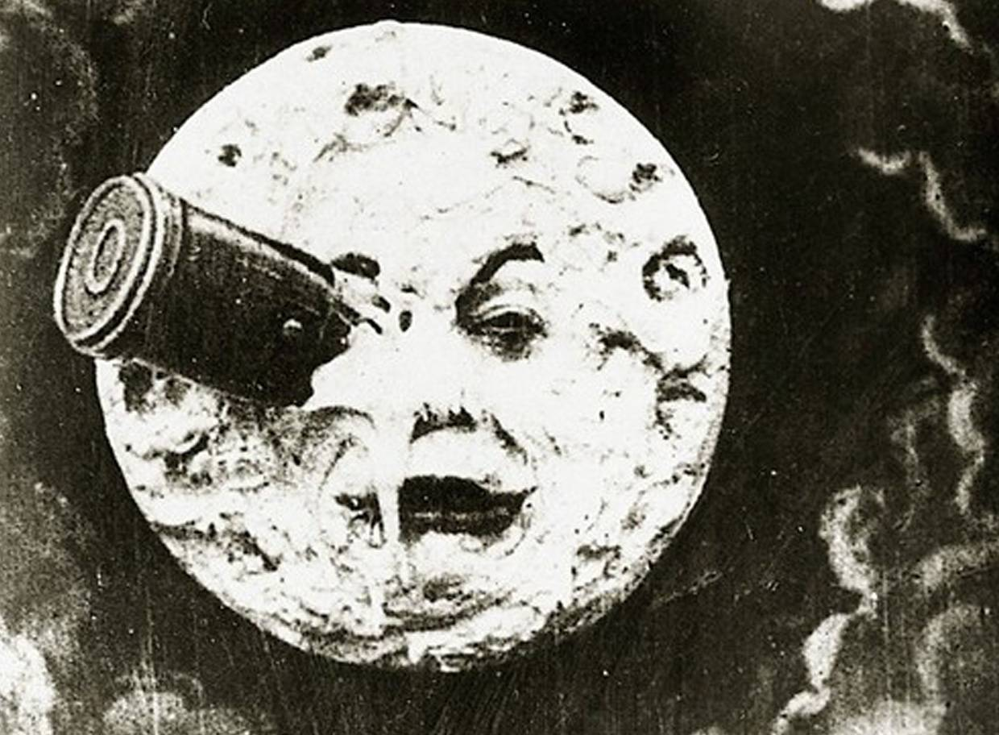
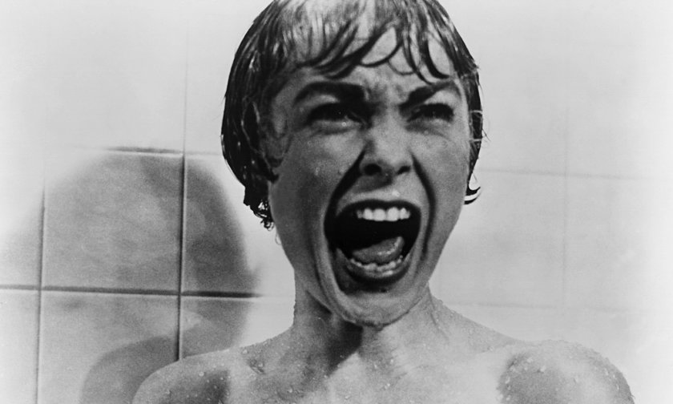
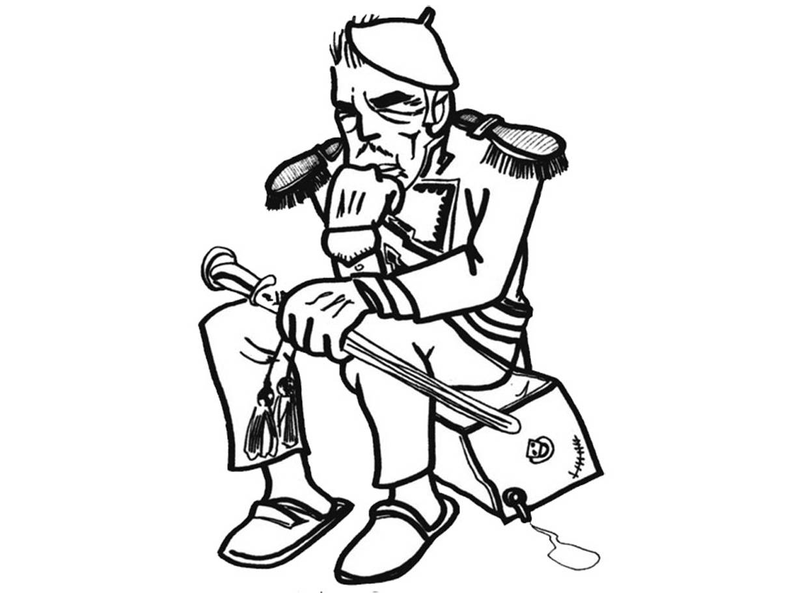
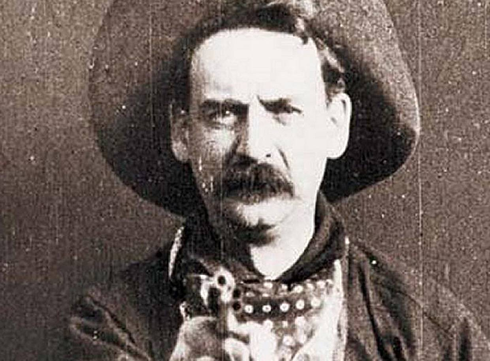
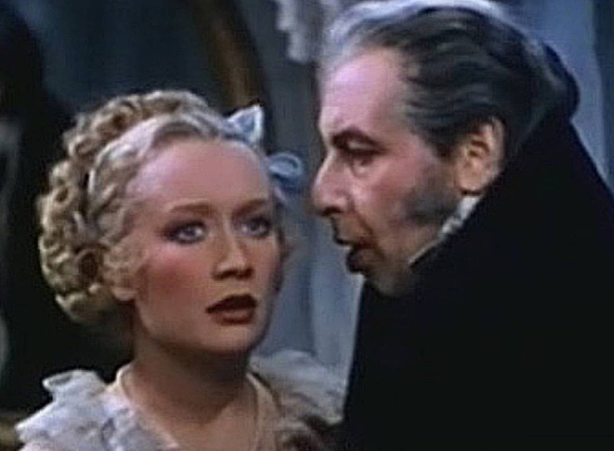

O Primeiro filme da historia
A história considera que foram as fitas exibidas pelos irmãos Auguste e Louis Lumière na primeira sessão pública do cinematógrafo, em 1895, em Paris. Durante cerca de 20 minutos, o público se maravilhou com o aparelho assistindo a imagens de Empregados Deixando a Fábrica Lumière e de Chegada de um Trem à Estação de la Ciotat. Mas, se estamos falando de longas-metragens, a honra pertence à Austrália. The Story of the Kelly Gang, de 1906, conta, em 70 minutos, a história de Ned Kelly, fora da lei que desafiou a preconceituosa Austrália colonial, transformando-se em herói nacional. O personagem foi tema de outra produção mais recente, de 2003, com Heath Ledger.
Os primeiros filmes em alguns gêneros populares:
Documentário
FILME: Nanook, O Esquimó QUANDO: 1922, Embora muitos dos primeiros curtas que circularam pelas salas de cinema fossem cenas do cotidiano, foi só em 1922 que o norte-americano Robert J. Flaherty produziu uma película nos moldes do que hoje chamamos de documentário. As filmagens no Ártico duraram um ano
Ficção científica
FILME: Viagem à Lua QUANDO: 1902, O ilusionista e cineasta francês Georges Méliès, considerado o criador das principais técnicas narrativas da sétima arte, dirigiu essa aventura sobre cientistas enviados ao espaço. Foi inspirada em Da Terra à Lua, de Julio Verne, e Os Primeiros Homens na Lua, de H.G. Wells
Terror
FILME: O Gabinete do Dr. Caligari QUANDO: 1920, É um marco do expressionismo alemão, dirigido por Robert Weine. O filmeconta as desventuras de uma misteriosa dupla: o hipnotizador Dr. Caligari e o sonâmbulo Cesare, que adivinha o futuro. Após a previsão da morte de um homem, os dois se tornam os principais suspeitos do crime
Animação
FILME O Apóstolo QUANDO: 1917, Durante muito tempo, acreditava-se que o primeiro longa animado havia sido Branca de Neve e os Sete Anões (1937), de Walt Disney. Mas, nos anos 80, foi descoberta essa obra do argentino Quirino Cristiane, de 1917. A película de 70 minutos ironizava o então presidente da Argentina, Hipólito Yrigoyen
Faroeste
FILME: O Grande Roubo do Trem QUANDO 1903, O fascínio do público por histórias com crimes, perseguições e tiroteios começou bem cedo. O diretor Edwin S. Porter não apenas lançou esse estilo de filme(inspirado em casos como o de Butch Cassidy) como também criou técnicas como a edição paralela, que deixou o cinema com menos cara de teatro filmado
Musical

FILME: O Cantor de Jazz QUANDO: 1927, Houve vários experimentos tentando sincronizar som e imagem num filme, mas isso só aconteceu de verdade com essa película de Alan Crosland, que se tornou o primeiro filme sonoro de todos os tempos. A história acompanha um judeu que foge de casa para se dedicar à sua paixão, o jazz
Colorido
FILME Vaidade e Beleza QUANDO 1935 Desde a origem do cinema, houve tentativas de simular cores nas películas. Alguns cineastas pintavam cada frame manualmente. Outros usavam a técnica de “viragem” para colocar um tom (e apenas um) em algumas sequências. Só com o surgimento do processo Technicolor a realidade pôde ser registrada com todas as suas matizes. O primeiro filme a se beneficiar disso foi o drama romântico Vaidade e Beleza